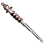
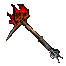
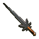
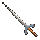
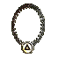
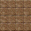
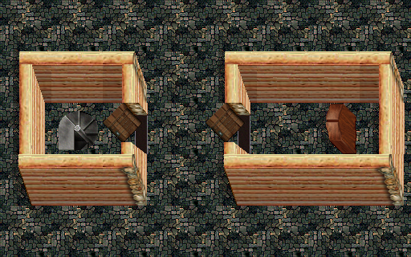
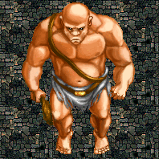

| Quest Name | What to do |
Akronium Brick
|

 Collect small ore(1lbs each) and large ore(10 lbs each) until you reach 100lbs of ore. Jabroon in Nameless town holds onto your ore until you reach 100lbs then he gives you a brick. Note: Some locations where ore can be found: Akro mines (Small 1lb ore) Keep (Small 1lb ore - 10lb ore) Sekora (10lb ore) Mormar (10lb ore) By killing the Green Dragon (10lb - 40lb ore) By killing Lich in the swamps (Chance to drop 10lb ore) By killing Jelterban (10lb - 20lb ore) By killing Minlok (10lb - 40lb ore) |
Coin molds
|

 Head over to Arnes in Nameless town after you have obtained an Apple sapling and Dryad parts. |
Akronium Coins
|
Visit Emerax in Nameless town, bring him a coin mold and a brick of akronium to get 100 akronium coins. |
Akronium ring |
Have a Akronium block enchanted to +6, then visit Jinx in Nameless town who gives you an Akronium ring. |
| Defense staff  |
Bring an akronium ring to Jeblaxin in Homlet to trade for a defense staff. |
|
Upgraded Defense Staff |
Obtain some Volcanic ore and a normal defense staff, 
then visit Irabob in Graine town to upgrade the defense staff. |
|
Flame hammer  |
 Head over to Nameless town and speak to Moman he will trade a Flame hammer for your Merkon short sword. |
| Improved merkon short sword  |
Obtain an Akronium ring and a Merkon Short Sword Head to Graine town and visit Yomin to trade for the Improved merkon sword |
Bandit lord inner access key
|
Obtain an improved merkon short sword Head to Graine town and visit Yomin to trade for the key (Yomin, trade) then (Yomin, key) |
 Mine key |
Find a Forgoten dust by killing in an area called forgottons which is located at the south end of the nameless lands surface Look for Akbat to trade for the key to the akro mines. Note: he is located in a hut between the swamps and the green dragon lair |
| Protect Halmon | Find Halmon somewhere on the surface of Nameless land and speak to him. He will tell you that assassins are coming to kill him then ask if you can protect him. 3 waves of assassins will spawn to kill Halmon followed by a single assassin Halmon will reward you with two lower level tiers (randomly selected) |
| Progress past level 50 | Once you reach level 50, dedicate to the primal quest. Halgroth, path (if good aligned) in graine village. Primas, path (if neutral aligned) in nameless town. Necro, path (if evil aligned) in homlet. Obtain 200 Akronium coins and bring them to Emergon on the Nameless land surface. Once complete you will be able to gain exp until level 55 in certain areas of nl as well as primal aleria. Note: this can be skipped by going straight to the primal progression quest. |
| Primal - Progression past level 55 | When visiting the npc depending on your alignment, you ask them about primal, then say path to them. Example: Hal, primal (He tells you a short tale) Hal, Path (sets you on the primal path) 


 Obtain the 5 primal ingots once done you will be able to advance to level 70, skill 34 Note: You may be able to skill to 35 in some cases before unlocking it, c-aleria and potentially other places |
| Nameless lord - Progression past level 70/34 | Once you have completed the primal quest as well as reached level 60, you must summon all of the dukes, giving you 600 Nameless land only hp and allowing you to speak to Lord summoner. Which lets you summon the Nameless lord. Once you have slain the nameless lord, you will be able to advance up to level 75, skill 35 |
| Bandit lord lair access | Take an Improved merkon short sword visit Yomin in Graine town to trade for an Inner door key  Head over to the Ice floes of nameless land, Kill crits until you find an outer door key With both keys you can access the BanditLord's lair. |
Bandit lord ring |
Gather a party to slay the Banditlord, search his corpse and take his head, go to Jelterban and trade the head for a ring. ( Jelt, Freedom ) Jelterban requires you to be factioned to trade with him. |
Dryad bread
|
Obtain a Brigand heart and hold it in right hand, find a dryad and say hello. (Dryad, hello) |
| Dornar entry | Head over to nameless town and speak with Mekik, then go visit Kimja who resides outside South west town, Bring Dryad bread to him. |
| Keep access | To gain access to keep 1, you need the crest amulet from keep 0, when found take it Almora who resides in homlet.  To gain access to keep 2, you need the crest armor from keep 1, when found take it Almora who resides in homlet.  To gain access to keep 3, you need the crest ring from keep 2, when found take it Almora who resides in homlet.  To gain access to keep 4, you need to be partied with a thief who can mug Almora. |
| Factioning |
Graine faction: Kill Sentry or Elite guards in the Nameless town until you're reached 13000 faction points Note: you begin at 10000 Note: Visit a Diplomat to check what your current faction points are at. 'Dip, graine' Nameless faction: Kill bandits who roam the nameless land to collect hearts Turn them in to the nameless factions Cryptkeeper to gain nameless faction points until you've reached 13000 Note: you begin at 10000 Note: Visit a Diplomat to check what your current faction points are at. 'Dip, nameless' Note: Needs verification as to whom the hearts are turned in to Miner faction: Kill enemies around the nameless icefloes until you're reached 13000 faction points Note: you begin at 10000 Note: Visit a Diplomat to check what your current faction points are at. 'Dip, miners' Bandit faction: Kill forestgiants and woodelves around nameless land until you're reached 13000 faction points Note: you begin at 10000 Note: Visit a Diplomat to check what your current faction points are at. 'Dip, bandits' Faction gain/loss per kill: Bandit kill > -1 bandit faction Sentry kill > +1 graine faction, -2 nameless faction Elite kill > +16 graine faction, -32 nameless faction Guard kill > +1 nameless faction, -2 graine faction Banditkin kill > -2 bandit faction Forestgiant kill > +1 bandit faction, -1 miner faction Woodelf kill > +1 bandit faction, -1 miner faction Ice floe enemy kill > + 1 miner faction, -1 bandit faction Green dragon kill > -200 forest faction (Jelterban) Banditlord kill > +1000 forest faction (Jelterban) Thanks to Brenem's notes for a lot of info. His notes |
| Great hall access (Level 25 req) |
First you require to be factioned with either nameless or graine (13000 points) Talk to the cryptkeeper for your faction, he will ask for an Akronium brick, some forgotten dust and a dragon heart.  Bring these to him and you gain access to the great halls. |
| Decayed lands access (Bogs) |
*Requires Great hall access and level 35* Inside the greathalls, visit the first GateKeeper, Speak to the Gatekeeper, Tell her start to spawn the first trial. (Gate, Start) Head to the west room to defeat the first trial (Initiate) When successful, return to the first GateKeeper, click her. Head to the second Gatekeeper, speak to her then tell her start (Gate, Start) Head to the west room and defeat the second trial (Soldier) When successful, return to the second GateKeeper, click her. Repeat for each of the three remaining gatekeepers to defeat the remaining trials Centurian, Baron, Bloblord. Once complete, head to the GateMaster and tell her start to summon SirAkron, the final trial before gaining access to Decayed lands. |
|
Mormar entry (Level 50 req) |
*Requires Decayed lands (bogs) access* Obtain two breath capture vials and take them to Interim in the Decayed land bogs Note: only grants access to Mormar-1, each floor requires a ring to be turned in via 'padding' |
|
- Alternate - - method - Mormar entry (Level 50 req) |
*Requires Decayed lands (bogs) access* Obtain an authority ring that is found on mormar-1 from another player TODO: add more info Note: only grants access to Mormar-1, each floor requires a ring to be turned in via 'padding' |
| Mormar Padding Process |
*Requires Decayed lands (bogs) access* Each mormar floor has an authority ring that drops in order to unlock the next floor. In order to use the ring to gain access the next floor you must go through a process called "padding" Head over to the refuge in the northwest area of the Decayed lands (Bogs) The entrance teleport hex to the refuge is on the west side of the building. The next part will require at least 2 other people, one at each of the pads that are located both east and west of the mormar climb down spot  Inside the refuge head over to Humix and with the authority ring in hand tell him start (Hum, start) Then you must wait for the other players to kill the 4 experiment enemies at each of the two pads Note: Killing the experient enemies too fast will cause the process to become bugged. Once all the experiment enemies have been killed you must then click on Humix then tell him done (Hum, done) and lastly click him once more This process must be repeated for each mormar level ring and the experiment enemies get harder each time |
| Duke Marvin | First go visit the first DukeSummoner in Nameless town, once there tell him duke. (Dukesummoner, Duke) he then sends you to see Shimok. Go visit Shimok in Nameless town, he will tell you to Fill the shimok book of pages 
 Kill wolves on the nameless lands surface until you find all pages, as well as the book. There are 20 pages total to find. Give Shimok the completed book. hold the book in your hand and tell Shimok, assemble. (Shimok, Assemble) Head back to the first duke summoner and tell him duke (Dukesummoner, duke) He will require some impure volcanic ore. Kill bandit lord for the ore then bring it back to DukeSummoner With ore in hand tell him duke. (Dukesummoner, duke) Then tell him help. (Dukesummoner, help) You will now be able to summon Duke Marvin. (Duke, summon) |
| Duke Xuladan | First go to the second DukeSummoner in Nameless town, once there tell him duke. (Dukesummoner, Duke) He sends you to see Keeper near the maze entrance in Nameless town Head to the keeper of the Nameless town maze, tell him upkeep. (Keeper, Upkeep) He will give you 5 tries at the maze for 100 akro coins. Your goal inside the maze is to locate Judge at the end of the maze. When ready to attempt the maze, tell keeper Go (Keeper, Go) Once you find Judge, stand on his hex and click him. Return to DukeSummoner, Tell DukeSummoner help (Duke, help) He will then ask for a packet of mandrake root.  Obtain one by killing BogWitches in the Decayed lands (bogs) Bring it DukeSummoner and you will be able to summon Duke Xuladan. Note: Packet of mandrake will only drop after completing the maze |
| Duke Merntax | Head down to Mormar 15 to kill Foreman and obtain the mormar book Search for a page on each of the 25 levels of mormar to complete the book. Once completed bring it back to the duke summoner which will allow you to summon Duke Merntax. |
|
600 hp boost (In Nameless land only) |
Once all 3 duke quests have been completed, summon each duke and say blessing to them (Duke, Blessing) After saying blessing, click on the duke |
Summon Nameless Lord

|
Once all 3 duke quests are completed, visit each dukesummoner and summon each duke.
Speak to each of the dukes then go see lordsummoner.
Tell lordsummoner summon (Lord, Summon) Upon defeating the nameless lord speak to the nameless lord spirit that appears once you've obtained the scroll, tell the nameless lord grant followed by release (Name, Grant) (Name, Release) The process is now complete and ready for the next person |
| Hp/Ep regen |
Bring A Miners key to Samex in the basement of the sw nameless town for Hp regen Note: The door to the basement is locked The skeleton key from Mujaba(Aleria) can open it  Or Bring A miners key to Giltry in nameless town for Ep regen. Note: you cannot do both Giltry is in a tent close to the duke maze area |
| Advanced Hp/Ep regen |
 Obtain a Large pine tree from bandits in the decayed lands (Bogs) Take it to Blamex in the caves of decayed lands for Hp regen. Or Fildatry in the caves of decayed lands (Bogs) for Ep regen. Note: you cannot do both |
Sabre mold |
 Obtain an Akronium brick and a Sabre then bring them to Altur in Nameless town for a Sabre mold. |
|
Improved sabre |
Bring Akronium coins as well as a Sabre mold to Derinder in the Southwest town's basement. Note: The door to the basement is locked The skeleton key from Mujaba(Aleria) can open it |
 Improved vamps |
Visit Axen in Nameless town and tell him gripclaws Axen, gripclaws He will tell you to go see Felontes on the Nameless lands surface north of the lake. Felontes tells you to see Pupixil in Graine town, Pupixil sends you back to Felontes, Felontes sends you to Axen. After visiting Axem, bring Akronium Coins and a Dragon heart to Felontes for the improved vamps.
|
Enchanted terror blood |
Head over to Alchemix in the Decayed land caves after you have obtained a terror blood as well as a Perfect oak. Alchemix will then create an Enchanted terror blood. |
| Breath capture vials |
Obtain a Swamp bat wing and an Enchanted terror blood,  head over to Kurrashna in Decayed land caves to create a Breath capture vial. |
Breath of a titan |
While holding a breath capture vial in hand, finish off either Albron or a RiftTitan  |
Titan annealed Akronium |
Obtain an Akronium brick and breath capture vial with a breath inside and go see Encorma in the Forges to trade. Notes: forges is the place where you obtain Titan bones, located in the bogs |
| Killer weapons |

Obtain a Titan bone as well as a Titan Annealed Akronium. Bring both to one of the traders in the decayed lands outpost for the corresponding weapon. |
| Upgraded Killer Weapons |
 Obtain 10 fluidic diamonds and trade them with Enjador on Mormar 1 to add +10 offence to your Killer weapon. Note: fluidic diamonds appear in the gem category, examine them to tell the difference Obtain some terror blood and trade it too Jhular on Mormar 2 to max out your killer weapons defense. Greatswords require 50 bloods Halberds require 30 bloods Shortswords require 30 bloods Longswords require 30 bloods Maces require 30 bloods Daggers require 11 bloods Obtain an Improved sabre and trade too Simjil on Mormar 3 to make your Killer weapon silver. Obtain a Fluidic Akronium and take it too Moxmor on Mormar 4 to make your Killer weapon a power weapon. Obtain a large pine tree and trade it with Stompr on Mormar 5 to allow your killer to prone.  Obtain a Lorsulan armor and trade it with Hawk in Mormar 9 to add Deadeye disc to your killer weapon. Obtain a Titan bone and trade it with Excruton on Mormar 10 to increase the damage of your killer weapon.  Obtain a prot ice potion and trade it with Calamon on Mormar 12 to activate the dancing ability of your killer weapon.  Obtain 10 nork youth pots and go see Youpor in Decayed land caves to make a 10oz youth pot, then take the 10oz youth pot to Famador on Mormar 15 to make your killer weapon glow. |
Tortulan plate
|

Obtain Tortulan scales and 100 Akronium coins and go see Kidbana in the Southwest town's basement. Note: The door to the basement is locked The skeleton key from Mujaba(Aleria) can open it |
|
Lorsulan plate
|

Obtain a set of lorsulan scales along with and 100 Akronium coins and bring it to Duneral in the Southwest town's basement. Note: The door to the basement is locked The skeleton key from Mujaba(Aleria) can open it Note: You must be wearing the Tortulan armor to trade, the tortulan armor will be consumed |
Mantrapon plate |

Obtain a set of mantrapon scales and 100 Akronium coins to Mindra in the Southwest town's basement. Note: The door to the basement is locked The skeleton key from Mujaba(Aleria) can open it Note: You must be wearing the Tortulan armor to trade, the tortulan armor will be consumed |
| Prudence Ingot |
Obtained by killing Merkon |
| Strength Ingot |
Obtained by killing Ajamtax |
| Primal Ingot |
Obtained by killing BanditLord |
| Justice Ingot |
Obtained by finding Adjuticon on the nameless land surface and talking to him then saving the towns people after he teleports you to the town. Possible spots for Adjuticon: 117, 5 140, 52 136, 23 Kill all the waves of bandits that spawn north, south, east and west. Then kill bandit5 and search him for an ingot. Speak to Adjuticon afterwards for additional ingots based on the amount of children who survive After tell Adjusticon close (Adj, close) followed by (Adj, Leave) in order to leave the area |
| Wisdom Ingot |
Obtain a spy scroll from Ajamtax and a brick of Akronium and bring it to breshard in nork. Hold the spy scroll in your right hand, the akronium brick in your left hand. Once you arrive in breshes lair, tell him hail. (Bresh, Hail) he will then turn blue. He asks for a bar of akronium, so tell him akronium. (bresh, Akronium) Note: Make sure you are still holding both the scroll and akronium He then asks you what norken wisdom is, tell him "When all else fails, there exists the cold reality of steel" he will then give you the wisdom scroll. Go visit Spy on mormar-2 to trade the scroll for the ingot. |